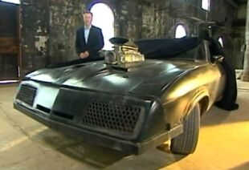

El Interceptor V8, también conocido como Pursuit Special, es el vehículo principal que Max Rockatansky conduce durante la saga Mad Max
Está basado en un Ford Falcon XB GT coupé de 1973; modificado para convertirse en un interceptor policial de las fuerzas del MFP.
>>>>>>> 2439846d378c691cec928493d6b0241631830523